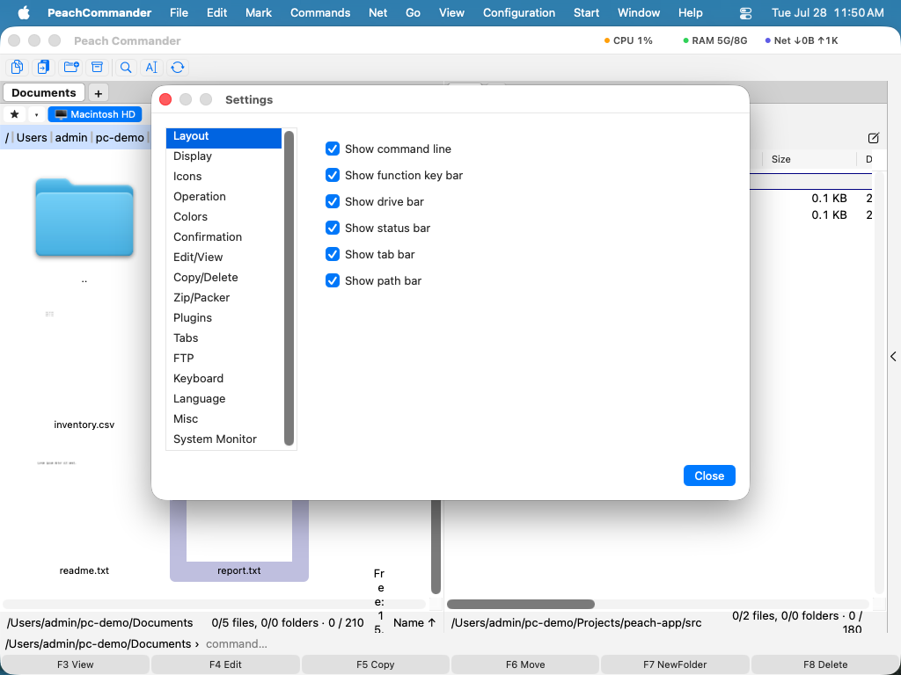

Inställningar
Inställningsfönstret är där du skräddarsyr Peach Commander efter hur du arbetar: vilka rader som visas, hur filer visas, hur kopierings- och raderingsåtgärder beter sig, arkivformatet som används när du packar, flikbeteende, FTP-standardvärden, visningsspråk med mera. Inställningarna är grupperade i sidor så att du snabbt hittar ett alternativ, och varje ändring sparas automatiskt i din personliga konfigurationsmapp.
Öppna Inställningar
- Välj Peach Commander > Inställningar…, eller tryck på Cmd+, (kommatecken).
- Du kan även öppna samma fönster från Konfiguration > Alternativ….
- Välj en sida från listan till vänster; alternativen för den sidan visas till höger.
- Justera reglagen. Ändringar träder i kraft direkt om inte en anmärkning på sidan säger annat.
- Vill du direkt till en inställning skriver du i sökfältet högst upp i fönstret. Matchande inställningar från alla sidor listas med den sida de hör till, och väljer du en öppnas den sidan med inställningen markerad. ↑/↓ flyttar genom resultaten, Retur öppnar det markerade och Esc lämnar sökningen och sätter tillbaka sidan du kom från.

(Bild: Sidan Layout styr vilka rader som visas runt panelerna.)Sidorna
Fönstret har dessa sidor, i ordning:
- Layout — visa eller dölj enhetsraden, flikraden, sökvägsraden och statusraden, och välj vilka sidor sidopanelen erbjuder.
- Visning — hur filer och mappar listas, inklusive datumformatet.
- Symboler — symbolernas utseende i fillistorna.
- Åtgärder — allmänt beteende, som vad som händer när du skriver i en panel (snabbsökning kontra kommandoraden).
- Färger — anpassade panelfärger, eller låt dem följa det aktuella temat.
- Bekräftelse — vilka åtgärder som ber dig bekräfta först, till exempel radering.
- Redigera/Visa — om sparande i redigeraren behåller en
.bak-säkerhetskopia, programmen som används för att redigera och visa filer, kopplingar per typ, och vad en förhandsvisning får kosta på nätverksplatser och i arkiv. - Kopiera/Radera — bevara filmetadata, använd snabb kloning, kopiera endast nyare filer, verifiera efter kopiering, skicka raderingar till papperskorgen och ange en valfri hastighetsgräns.
- Zip/Packare — standardarkivformatet och komprimeringsnivån som används när du packar.
- Insticksprogram — slå på eller av installerade insticksprogram.
- Flikar — hur mappflikar öppnas och beter sig.
- FTP — nätverksstandardvärden som keep-alive-intervallet.
- Tangentbord — granska och ändra kortkommandon.
- Språk — välj Systemstandard, English eller Deutsch.
- AI — konfigurera AI-assistenten: önskad modell, molnslutpunkt och nyckel, autonomi och den valfria MCP-servern (se AI Assistant).
- Övrigt — öppna din konfigurationsmapp i Finder.
Aktiverade insticksprogram kan lägga till sina egna sidor efter de inbyggda — till exempel Disk Map och System Monitor — så att deras alternativ finns i samma fönster (se Insticksprogram).
 (Bild: Sidan Visning styr hur filer och mappar listas.)
(Bild: Sidan Visning styr hur filer och mappar listas.)
 (Bild: Sidan Åtgärder styr snabbsökning och musbeteende.)
(Bild: Sidan Åtgärder styr snabbsökning och musbeteende.)
Var dina inställningar lagras
Din konfiguration förvaras i klartextfiler inuti din personliga Application Support-mapp, på ~/Library/Application Support/PeachCommander. För att öppna den, gå till sidan Övrigt och klicka på Öppna konfigurationsmapp. Sparade FTP-lösenord lagras inte i dessa filer; de förvaras säkert i macOS nyckelring.
Inställningar skrivs allteftersom du ändrar dem. Du kan även framtvinga en sparning när som helst med Konfiguration > Spara inställningar, och lagra det aktuella fönsterläget och panellayouten med Konfiguration > Spara position.
Ta med inställningar från Total Commander
Om du byter från Total Commander på Windows kan du importera dina sparade FTP-platser. Välj Konfiguration > Importera wincmd.ini… och välj din Total Commander FTP-konfigurationsfil. Dina anslutningar läggs till i Peach Commander i samma ordning som de fanns där.
Kortkommandon
| Åtgärd | Kortkommando |
|---|---|
| Öppna Inställningar | Cmd+, |
Anmärkningar
- Sidan Språk erbjuder Systemstandard, English och Deutsch. En språkändring träder i kraft först efter att du startat om Peach Commander.
- Färger som ställs in på sidan Färger åsidosätter temat; använd Återställ standardvärden där för att återgå till temats färger.
- Peach Commander lagrar sina inställningar endast i sin egen konfigurationsmapp, så dina ändringar påverkar aldrig andra appar och är enkla att säkerhetskopiera genom att kopiera den mappen.